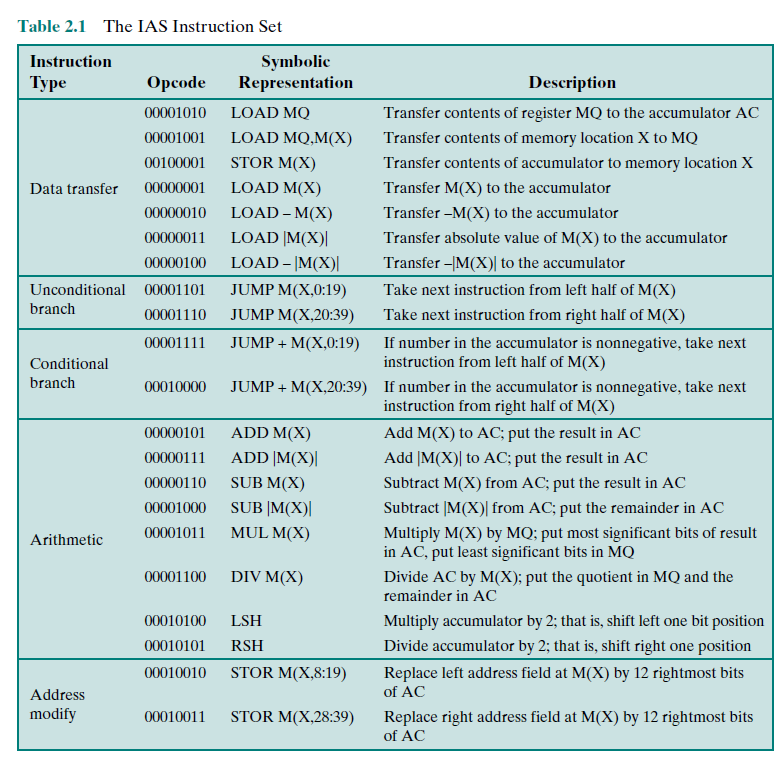

2. Arquitectura Von Neumann
2.1. Arquitectura Von Neumann
-
Calcular la suma \(\sum_{i=1}^{N}i=N(N+1)/2\)
2.1.1. Temario
-
Arquitectura Von Neumann:
-
CPU
-
Memoria
-
Entrada / Salida
-
2.1.2. Contexto Histórico
Antecedentes
-
1833: Charles Babbage → Diseña la 1ª Computadora mecánica
-
1890: Máquina tabuladora de Herman Hollerith. Censo en USA. IBM (1925)
-
1936: Alan Turing → Algoritmia y concepto de máquina de Turing. Máquina código Enigma.
-
Seguna Guerra Mundial 1939-1945
-
1944: USA, IBM Computadora electromecánica Harvard Mark I
-
1944: Colossus (Colossus Mark I y Colossus Mark 2). Decodificar comunicaciones.
ENIAC
-
1947: En la Universidad de Pensilvania (laboratorio de investigación de balística para la artillería) se construye la ENIAC (Electronic Numerical Integrator And Calculator)
-
Ecuaciones diferenciales sobre balística (angle = f (location, tail wind, cross wind, air density, temperature, weight of shell, propellant charge, … ) )
-
Computadora electrónica (no mecánica) de propósito general.
-
Memoria: Sólo 20 acumuladores → flip-flops hechos con triodos
-
18,000 tubos electrónicos ó válvulas de vacío
-
-
Programación manual de los interruptores
-
100,000 instrucciones por segundo
-
300 multiplicaciones por segundo
-
200 kW
-
13 toneladas y 180 m2
-
EDVAC
-
1951: En la Universidad de Pensilvania (J. Presper Eckert y John William Mauchly ) comienza a operar la EDVAC (Electronic Discrete Variable Automatic Computer), concebida por John von Neumann, que a diferencia de la ENIAC no era decimal, sino binaria, y tuvo el primer programa (no solo los datos) diseñado para ser almacenado: STORED PROGRAM COMPUTER → program can be manipulated as data.
-
500000$
-
La EDVAC poseía físicamente casi 6000 válvulas termoiónicas y 12 000 diodos de cristal. Consumía 56 kilowatts de potencia. Cubría 45,5 m² de superficie y pesaba 7850 kg.
-
Arquitectura:
-
un lector-grabador de cinta magnética
-
una unidad de control con osciloscopio, una unidad para recibir instrucciones del control
-
la memoria : 2000 word storage "mercury delay lines" → poca fiabilidad
-
una unidad de aritmética de coma flotante en 1958.
-
-
IAS
-
1946-1952 : IAS (Institute Advanced Studies) mainframe :
-
Evolución de EDVAC: unidad de memoria principal y secundaria tambor magnético.
-
Memoria Selectron: almacenamiento capacitivo → carga electrostática
-
Posterior
-
1952: UNIVAC I (UNIVersal Automatic Computer I) was the first commercial mainframe computer. Evolución de la máquina tabuladora de Hollerith aplicado al procesado del censo en USA.
-
1952: IBM 701, conocido como la "calculadora de Defensa" mientras era desarrollado, fue la primera computadora científica comercial de IBM → primer lenguaje ENSAMBLADOR.
-
1964: mainframe (computadora central) IBM 360 → primer computador con ISA (microprogramación) → compatibilidad
-
tecnología híbrida entre componentes integrados discretos de silicio y otros componentes → no "circuitos" integrados.
-
Basic Operating System/360 (BOS/360), Disk Operating System/360 (DOS/360)
-
Tecnología de Semiconductor
-
1947: en los Laboratorios Bell, John Bardeen, Walter H. Brattain y William Shockley inventan el transistor.
-
1958: Kilby , primer circuito integrado en germanio.
-
1957: Robert Norton Noyce, cofundador de Fairchild Semiconductor, primer circuito integrado planar
-
1968: Robert Norton Noyce y Gordon Moore fundan Intel.
-
1971: Intel 4004 → cpu integrada en silicio → 8 bits
2.2. Institute Advanced Machine (IAS) : Arquitectura
2.2.1. Referencia
2.2.2. Ejemplo del Programa sum1toN
Código binario para calcular \(\sum_{i=1}^{5}i\)

Programación Imperativa
-
Paradigma:
-
Paradigma imperativo ó estructural : el algoritmo se implementa desarrollando un programa que contiene las ORDENES que ha de ejecutar la máquina
-
A diferencia de la programación declarativa: el algoritmo implementa QUÉ queremos que haga la computadora, no el COMO, no directamente las órdenes que ha de ejecutar.
-
Por ejemplo la operación \(\sum_{i=1}^{5}i\) , se puede describir en python como:
sum(range(5,0,-1))
-
-
Contenido de la Memoria: Datos e Instrucciones
-
La computadora IAS se programaba directamente en lenguaje máquina, no tenía un lenguaje simbólico como el lenguaje ensamblador.
-
Lenguaje Máquina: Código Binario
-
Edición del código binario mediante tarjetas perforadas o cintas magnéticas a través de una consola.
-
Tipo de información contenido en la memoria: DATOS e INSTRUCCIONES
-
Ejemplo de datos: números enteros +3278,+5,-1,-6592,…
-
Ejemplo de instrucciones:
-
LOAD M(8) : cargar en el registro acumulador el contenido de la posición 8 de memoria
-
ADD M(3) : sumar al registro acumulador el contenido de la posición 3 de la memoria
-
JMP M(100): saltar a la posición 100 de la memoria
-
etc
-
-
-
Concepto de programa almacenado : Instrucciones binarias y Datos binarios almacenados en la Unidad de Memoria
-
Fue la gran novedad de la arquitectura Von Neumannns
-
Es necesario CARGAR el módulo binario en la MEMORIA de la computadora para que quede almacenado.
-
-
Programación secuencial: Las instrucciones se ejecutan secuencialmente según están almacenadas en la memoria…mientras no se ejecute una instrucción explicita de salto que rompa la secuencia.
Arquitectura: Instruction Set Architecture (ISA)
-
Para poder analizar el programa es necesario no solo conocer el lenguaje binario de la máquina sino conocer su ARQUITECTURA. La arquitectura de una compuradora es el WHAT de la máquina, es decir, QUE instrucciones es capaz de ejecutar la máquina, para lo cual es necesario conocer la ARQUITECTURA DEL REPERTORIO DE INSTRUCCIONES (Instruction Set Architecture ISA):
-
el repertorio de instrucciones: operaciones y modo de acceso a los datos
-
jerarquía de memoria: memoria principal y registros
-
formato de instrucciones y datos
-
| la ISA es el primer nivel de abstracción del hardware físico de la computadora. |
2.3. Estructura de la computadora IAS
2.3.1. Módulos
| La Estructura es el HOW de la máquina. De qué hardware disponemos para poder ejecutar las instrucciones máquina definidas por la arquitectura. |
-
Hardware con Estructura Modular:
-
CPU-Memoria-I/O-Bus
-
Jerarquía de Memoria: 2 niveles : Memoria Principal (externa a la CPU) y Registros (internos a la CPU)
-
-

-
Arquitectura Interna de la CPU : Microarquitectura
 Figure 16. Estructura de la máquina IAS
Figure 16. Estructura de la máquina IAS
2.3.2. Unidad Central de Proceso (CPU)
-
CPU:
-
El Funcionamiento de la CPU está dividido 3 FASES: Captura, Interpreta y Ejecuta las instrucciones secuencialmente. A la secuencia de las 3 fases se le conoce con el nombre de Ciclo de Instrucción.
Figure 17. Ciclo de Instrucción
-
-
Cada instrucción máquina de un programa es capturada, interpretada y ejecutada por la CPU y en ese orden. El circuito electrónico digital encargado de controlar que se realize dicha secuencia es la Unidad de Control integrada en la CPU. La Unidad de Control da microordenes mediante señales electrónicas al subcircuito capturador, al subcircuito intérprete y al subcircuito ejecutor para que se lleven a cabo todas las fases del ciclo de instrucción de cada instrucción del programa almacendado en la memoria principal.
-
Tres submódulos principales de la CPU:
-
Unidad de cálculo: Unidad Aritmético-Lógica (ALU)
-
Unidad de control: Circuito secuencial que implementa el Ciclo de instrucción dando las órdenes eléctricas a los distintos bloques (ALU, memoria principal, registros, buses, etc) en cada fase hasta completar el ciclo de instrucción.
-
Registros de memoria: En un registro se puede escribir o leer un dato o dos instrucciones.
-
2.3.3. Memorias
Memoria Principal
-
Debe almacenar el programa a ejecutar en código binario.
-
La CPU es el único módulo que tiene acceso a la memoria principal.
-
Las instrucciones y datos del programa se almacenan secuencialmente.
-
Almacena el programa en dos secciones: Sección de Datos y Sección de Instrucciones
-
Organizada en Palabras accesibles aleatoriamente. Random Access Memory.
-
Dinamismo: Lectura/Escritura de datos e instrucciones
-
En la máquina IAS las direcciones de memoria apuntan a palabras de 40 bits que pueden almacenar ó un dato de 40 bits o dos instrucciones de 20 bits cada una.
-
Random Access Memory (RAM): direccionable cada posición de memoria.
-
Shared Memory: memoria compartida entre datos e instrucciones. También comparten el bus de acceso a memoria.
-
Capacidad para 212=4K palabras con 40 bits para cada palabra.
-
4K x 40bits = 4K x 5Bytes = 20KBytes
-
En cambio la memoria física disponible en esa época era de : 1024 palabras de 40 bits = 5 KBytes (Libro "The Computer from Pascal to von Neumann", Herdman Godstine, pg314, ISBN 0-691-02367-0). Limitación tecnológica.
-
Registros de la CPU
-
Memoria interna a la CPU: 2 tipos de registros: accesibles por el programador y no accesibles por el programador.
-
AC y AR/MQ: Acumuladores de la ALU. Multiplier/Quotient .Son los únicos registros accesibles por el programador.
-
Registros NO accesibles por el programador: todos los registros de la Unidad de Control: MBR,PC,IR,IBR,MAR
-
MBR: Selectron Register ó Memory Buffer Register MBR ó Data Buffer Register DBR. Tamaño de 40 bits. Almacena el dato o par de instrucciones leídas de la memoria resultado de la fase de captura del ciclo de instrucción ó almacena el dato a escribir en la memoria resultado de la última fase del ciclo de instrucción.
-
PC: Control Counter: Program Counter (PC) o Instruction Pointer (IP). Tamaño de 12 bits. Apunta a la siguiente instrucción a capturar
-
IR: Control Register: también denominado Instruction Register IR. Tamaño de 20 bits. Almacena la instrucción capturada durante el ciclo de instrucción
-
IBR: Instruction Buffer Register: Almacena la segunda instrucción capturada durante el ciclo de instrucción. Tamaño de 20 bits. Observar que esto significa que en la fase de captura se capturan dos instrucciones simultáneamente.
-
MAR: Memory Address Register: current Memory Address. Tamaño de 12 bits. Apunta al operando o instrucción a capturar durante la primera fase del ciclo de instrucción.
-
-
Su tamaño define lo que se conoce como "word size" de la arquitectura. La máquina IAS tiene una arquitectura de 40bits ó un Word de 40 bits
2.3.4. Bus
-
Conjunto de hilos o pistas metálicas paralelas para conectar dos dispositivos electrónicos. Todo el mundo ha tenido en sus manos un cable USB el cual contiene un bus USB (Universal Serial Bus).
-
Bus del Sistema:
-
Interconexión CPU-Memoria Principal: transferencia de datos e instrucciones.
-
Bus de Datos (40 hilos), Bus de Direcciones (12 hilos) y Bus de Control (Lectura/Escritura) (1 hilo). En total 53 hilos o pistas son necesarios para interconectar la CPU y la Memoria Principal.
Figure 19. Conexión CPU-Memoria Principal
-
2.3.5. Input Output (I/O)
-
Las entradas y salidas de una computadora son necesarias spara poder operar con ellas, bien el programador o bien otras máquinas. Para acceder externamente a la computadora son necesarios los periféricos como teclados, pantallas, etc
-
En la máquina IAS el programa se escribe en tarjetas perforadas (Punch Cards). Tarjetas para Datos y tarjetas para instrucciones. Es necesario cargar los datos en la memoria antes de la ejecución del programa.
-
tarjetas perforadas, consola, tambores magnéticos, cintas magnéticas, cargador de memoria mediante un lector de tarjetas , display mediante tubos de vacío, etc.. → tecnología obsoleta.
-
No tendremos en cuenta el módulo I/O y nos centraremos en los módulos CPU-Memoria Principal.
-
2.3.6. Animación del Ciclo de Instrucción
2.4. ISA: Arquitectura del Repertorio de Instrucciones de la máquina IAS
2.4.1. Formato de los datos e Instrucciones de la Computadora IAS
-
Arquitectura de la Memoria
-
Word
-
40 bits : 1 dato ó 2 instrucciones
-
-
Datos
-
Números Enteros en formato Complemento a 2.
-
Data Format
Figure 20. Formato de los datos -
Observar que el bit con la numeración cero es el de la izda.
-
-
Instrucciones
-
Código de Operaciones de 8-bit seguidos de un operando de 12-bit (data address)
-
Instruction Format
Figure 21. Formato de las instrucciones -
Definimos un sólo operando o ninguno en cada instrucción
-
Accumulator Based Architecture
-
Una operación que requiera dos operandos implicitamente hace referencia a un operando almacenado en el acumulador
-
Observar que el bit con la numeración cero es el de la izda.
-
La instrucción de la izda (0-19) se carga en los registros, internos de la CPU, el código de operación IR y el campo de operación en MAR .
-
La instrucción de la derecha (20-39) se carga en el registro, interno de la CPU, IBR .
-
Modo de direccionamiento del Operando: Referencia del Operando. Esta arquitectura se diseño con único modo de direccionamiento denominado "Direccionamiento Directo" donde en el campo de operando de la instrucción se especifíca la dirección de memoria del operando
-
-
-
Contenido de la Memoria
-
Las direcciones de memoria las visualizamos dobles ya que hacen referencia a la primera a los 20 bits LSB y la segunda a los 20 bits MSB de una palabra de memoria de 40 bits.
-
Observar que en la columna data están las dos secciones: sección de instrucciones y sección de datos
-
En la arquitectura von Neumann datos e instrucciones comparten el mismo espacio de direcciones de memoria.
Figure 22. Codigo Maquina sum1toN de la máquina IAS
-
2.4.2. Repertorio ISA
Lenguaje RTL
-
Información sobre el Lenguaje de Transferencia entre Registros (RTL) en el Apéndice
-
El lenguaje de transferencia entre registros permite describir programas a nivel de microoperaciones al igual que los lenguajes máquina binario y lenguaje ensamblador. La ventaja del lenguaje RTL es que su sintaxis es independiente de la arquitectura de la computadora, es decir, es un lenguaje Universal. Por lo tanto si describimos un programa en el lenguaje RTL su transcripción a un lenguaje ensamblador de arquitectura esapecífica como la arquitectura amd64,ARM, RISC-V,etc resulta mucho más sencilla.
Repertorio de la máquina IAS
-
Instruction Set Architecture (ISA): Definición y características del conjunto de instrucciones. Arquitectura del Repertorio de Instrucciones.
-
En la versión original no había código ensamblador, se programaba directamente en lenguaje máquina.
-
En la tabla adjunta, en la segunda columna, los MNEMONICOS (LOAD,ADD,SUB,etc) de las operaciones de las instrucciones se corresponden con los diseñados por el libro de texto de William Stalling. En la primera y última columnas las operaciones se simbolizan mediante un lenguaje de transferencia entre registros.
-
Selectron es el nombre de la tecnología utilizada para la Memoria Principal.
-
La notación S(x) equivale en notación RTL a M[x]
-
-
R es el registro AR que W.Stalling denomina registro MQ.
-
| Instruction name | Instruction name | Op | Description | Register Transfer Language (RTL) |
|---|---|---|---|---|
S(x)→Ac+ |
LOAD M(X) |
1 |
copy the number in Selectron location x into AC |
AC ← M[x] |
S(x)→Ac- |
LOAD -M(X) |
2 |
same as #1 but copy the negative of the number |
AC ← ~M[x]+1 |
S(x)→AcM |
LOAD |M(X)| |
3 |
same as #1 but copy the absolute value |
AC ← |M[x]| |
S(x)→Ac-M |
LOAD -|M(X)| |
4 |
same as #1 but subtract the absolute value |
AC ← AC-|M[x]| |
S(x)→Ah+ |
ADD M(X) |
5 |
add the number in Selectron location x into AC |
|
S(x)→Ah- |
SUB M(X) |
6 |
subtract the number in Selectron location x from AC |
|
S(X)→AhM |
ADD |M(X)| |
7 |
same as #5, but add the absolute value |
|
S(X)→Ah-M |
SUB |M(X)| |
8 |
same as #7, but subtract the absolute value |
|
S(x)→R |
LOAD MQ,M(X) |
9 |
copy the number in Selectron location x into AR |
|
R→A |
LOAD MQ |
A |
copy the number in AR to AC |
|
S(x)*R→A |
MUL M(X) |
B |
Multiply the number in Selectron location x by the number in AR. Place the left half of the result in AC and the right half in AR. |
|
A/S(x)→R |
DIV M(X) |
C |
Divide the number in AC by the number in Selectron location x. Place the quotient in AR and the remainder in AC. |
|
Cu→S(x) |
JUMP M(X,0:19) |
D |
Continue execution at the left-hand instruction of the pair at Selectron location x |
|
Cu`→S(x) |
JUMP M(X,20:39) |
E |
Continue execution at the right-hand instruction of the pair at Selectron location x |
|
Cc→S(x) |
JUMP+ M(X,0:19) |
F |
If the number in AC is >= 0, continue as in #D. Otherwise, continue normally. |
|
Cc`→S(x) |
JUMP+ M(X,20:39) |
10 |
If the number in AC is >= 0, continue as in #E. Otherwise, continue normally. |
|
At→S(x) |
STOR M(X) |
11 |
Copy the number in AC to Selectron location x |
|
Ap→S(x) |
12 |
Replace the right-hand 12 bits of the left-hand instruction at Selectron location x by the right-hand 12 bits of the AC |
||
Ap`→S(x) |
13 |
Same as #12 but modifies the right-hand instruction |
||
L |
LSH |
14 |
Shift the number in AC to the left 1 bit (new bit on the right is 0) |
|
R |
RSH |
15 |
Shift the number in AC to the right 1 bit (leftmost bit is copied) |
|
halt |
0 |
Halt the program (see paragraph 6.8.5 of the IAS report) |
-
Instruction Set (William Stalling)
Figure 23. IAS_Instruction_Set
2.4.3. Interfaz ISA
-
La arquitectura del conjunto de instrucciones (ISA) define la INTERFAZ entre el Hardware y el Software de la máquina
-
Podemos tener dos CPU totalmente diferentes, p.ej AMD e Intel, pero si tienen la misma ISA serán máquinas compatibles desde el punto de vista del sistema operativo.
-
Concepto de familia: un mismo repertorio de instrucciones puede ser ejecutado por distintas computadoras
-
2.5. Programación en el Lenguaje Ensamblador IAS
2.5.1. Estrategia del Desarrollo de un Programa en Lenguaje Ensamblador
| El paso de una descripción en un lenguaje de alto nivel a bajo nivel se realiza en lenguaje RTL teniendo en cuenta la arquitectura de la computadora donde se ejecutará el lenguaje máquina. Cada instrucción de alto nivel habrá que traducirla en un bloque de instrucciones de bajo nivel |
2.5.2. Codificación Binaria-Hexadecimal
-
Ejecutar el programa en lenguaje python:
# Tabla decimal-binario-hexadecimal
for i in range(256):
print(str(i)+" 0b"+'{:b}'.format(i).zfill(8))
print(str(i)+" 0b"+'{:9_b}'.format(i)+" 0x"+'{:_x}'.format(i))
print()-
los dígitos binarios son 2: el 0 y el 1
-
los dígitos hexadecimales son 16: 0-1-2-3-4-5-6-7-8-9-A-B-C-D-E-F. Que se corresponden con los valores 0-1-2-… hasta el valor 15.
-
El valor 9 se representan en binario como 1001 donde el peso de cada dígito viene determinado por su posición: 23, 22, 21, 20
-
El valor del número 1001 es la suma ponderada del los digitos del número con su peso: 1*23+0*22+0*21+1*20
-
-
En hexadecimal
-
el número 0xA tiene el valor 10, el 0xB 11, el 0xC 12
-
el número 0x10 tiene el valor 1*161+0*160 = 16
-
el número 0xFD tiene el valor 15*161+13*160 = 240+13 = 253
-
-
Relación hexadecimal-binario
-
el número 0xF6 se convierte en binario mediante la conversión de cada dígito hexadecimal en un grupo de 4 dígitos binarios. F (valor 15) en binario 1111 y 6 (valor 6) en binario 0110. Por lo que al número hexadecimal 0xF6 le corresponde el binario 0b11110110
-
-
Ejemplos de números de 1 byte: decimal-binario-hexadecimal
16 0b0001_0000 0x10 17 0b0001_0001 0x11 18 0b0001_0010 0x12 19 0b0001_0011 0x13 20 0b0001_0100 0x14 21 0b0001_0101 0x15 22 0b0001_0110 0x16 23 0b0001_0111 0x17 24 0b0001_1000 0x18 25 0b0001_1001 0x19 26 0b0001_1010 0x1a 27 0b0001_1011 0x1b 28 0b0001_1100 0x1c 29 0b0001_1101 0x1d 30 0b0001_1110 0x1e 31 0b0001_1111 0x1f 192 0b1100_0000 0xc0 193 0b1100_0001 0xc1 194 0b1100_0010 0xc2 195 0b1100_0011 0xc3 196 0b1100_0100 0xc4 197 0b1100_0101 0xc5 198 0b1100_0110 0xc6 199 0b1100_0111 0xc7 200 0b1100_1000 0xc8 201 0b1100_1001 0xc9 202 0b1100_1010 0xca 203 0b1100_1011 0xcb 204 0b1100_1100 0xcc 205 0b1100_1101 0xcd 206 0b1100_1110 0xce 207 0b1100_1111 0xcf
2.5.3. Ejemplo 1: sum1toN.ias
Enunciado
-
Calcular la suma \(\sum_{i=1}^{N}i=N(N+1)/2\)
Pseudocódigo
-
Descripción del algoritmo mediante expresiones modo texto en lenguaje NATURAL
-
VARIABLES:
-
variable suma : almacena los resultados parciales y final
-
variable N : almacena el dato de entrada
-
variable i : almacena el sumando que varía en cada iteración
-
-
Estructura del CODIGO imperativo:
-
La construcción de instrucciones básica es un bucle
-
El bucle cuenta las iteraciones en sentido descendente
-
En cada iteración se genera un sumando "i" y se realiza la suma=suma+i
-
Se inicializa "i"=N y en cada iteración i=i-1
-
Se sale del bucle cuando i=-1
-
-
Organigrama

RTL
-
Descripción RTL para la máquina IAS orientada a acumulador
;CABECERA ;Descripcion en lenguaje RTL del algoritmo sum1toN ;SECCION DATOS : ; Declaracion de etiquetas, reserva de memoria externa, inicializacion ; Variables ordinarias n: M[n] <- 5 ; variable sumando e inicializacion suma: M[suma] <- 0 ; variable suma parcial y final ;SECCION INSTRUCCIONES ;Arquitectura orientada a Acumulador (AC) ;Registros accesibles : AC ; inicio bucle : suma y generación de sumandos bucle: AC <- M[n] ; cargar sumando AC>=0 : PC <- sumar ; si el sumando < 0 fin del bucle y si es >0 salto a sumar ; fin del bucle stop ; realizar la suma sumar: AC <- AC + M[suma] M[suma] <- AC ; actualizar sumando AC <- M[n] AC <- AC - 1 M[n] <- AC ; siguiente iteracion PC <- bucle
Lenguaje ensamblador WStalling de la máquina IAS
-
Módulo fuente sum1toN.ws
; CABECERA ; 1ª version : sum1toN_v1.ias ; Calcula la suma de una secuencia de numeros enteros: suma = 1+2+..+n ; dato de entrada : n ; dato de salida : suma ; Algoritmo : bucle de n iteraciones ; Los sumandos se van generando en sentido descendente de n a 0 ; Se sale del bucle si el sumando es negativo -> -1 ; Estructuras de datos : variables n y suma . Constante uno. ; Lenguaje ensamblador: William Stalling ; Arquitectura de la máquina IAS de Von Neumann ;;;;;;;;;;;;;;;; SECCION DE INSTRUCCIONES ;Arquitectura orientada a Acumulador (AC) ;Registros accesibles : AC ; algoritmo: bucle que genera la secuencia n, n-1, n-2,...0,-1 si n>=0 bucle: LOAD M(n) ; AC <- M[n] JMP+ sumar ; Si AC >= 0, salto a sumar ; fin del bucle HALT ; stop ; realizar la suma sumar: ADD M(suma) ; AC <- AC+M(suma) STOR M(suma) ; M[suma] <- AC ; actualizar sumando LOAD M(n) ; AC <- M[n] SUB M(uno) ; AC <- AC-M[uno] STOR M(n) ; M[suma] <- AC ; comprobar condición bucle JMP bucle ; salto incondiconal ;;;;;;;;;;;;;;;;;;;SECCION DE DATOS ; Declaracion de etiquetas, reserva de memoria externa, inicializacion. ; Variables ordinarias n: .data 5 ; variable sumando uno: .data 1 ; cte suma: .data 0 ; sumas parciales y resultado final-
Se ha desarrollado la sección de datos para la reserva de memoria.
-
Se ha realizado un BUCLE SENCILLO ya que el bucle es la construcción necesaria en el algoritmo final.
-
Se ha realizado la operación RESTA ya que es una operación necesaria en el algoritmo final.
-
Se ha COMENTADO el código
-
Lenguaje ensamblador iassim
-
módulo fuente sum1toN_A.ias:
-
La 1ª versión implementa un bucle cuyo cuerpo únicamente almacena un dato en la variable suma. El dato varía en cada iteración.
-
Sintaxis → etiqueta: operacion operando ;comentario → 4 Columnas
-
Sólo puede haber etiquetas que apunten a instrucciones ubicadas al derecha de una palabra.
-
Los símbolos para indicar la operación (Ej. S(x)→Ac+) no son mnemónicos
-
No utilizar tildes ni en los comentarios ni en las etiquetas, ya que únicamente se admite código ASCII no extendido.
-
Si el número de instrucciones es impar se ha de rellenar la palabra de 40 bits de la última instrucción con los 20 bits de menor peso a cero para conseguir que el número de instrucciones del programa sea par: utilizar la directiva .empty
-
La sección de instrucciones debe de ir previamente a la sección de datos
; CABECERA ; Este código necesita ser DEPURADO ; 1ª version : sum1toN_A.ias ; Calcula la suma de una secuencia de numeros enteros: suma = 1+2+..+n ; dato de entrada : n ; dato de salida : suma ; Algoritmo : bucle de n iteraciones ; Los sumandos se van generando en sentido descendente de n a 0 ; Se sale del bucle si el sumando es negativo -> -1 ; Estructuras de datos : variables n y suma . Constante uno. ; Lenguaje ensamblador: IASSim ; Arquitectura de la máquina IAS de Von Neumann ;;;;;;;;;;;;;;;; SECCION DE INSTRUCCIONES ;Arquitectura orientada a Acumulador (AC) ;Registros accesibles : AC ; algoritmo: bucle que genera la secuencia n, n-1, n-2,...0,-1 si n>=0 bucle: S(x)->Ac+ n ; AC <- M[n] S(x)->Ah- uno ; AC <- AC-M[uno] At->S(x) suma ; M[suma] <- AC Cc->S(x) bucle ; Si AC >= 0, salto a bucle ; fin del bucle halt ; stop .empty ;;;;;;;;;;;;;;;;;;;SECCION DE DATOS ; Declaracion de etiquetas, reserva de memoria externa, inicializacion. ; Variables ordinarias n: .data 5 ; variable sumando uno: .data 1 ; cte suma: .data 0 ; sumas parciales y resultado final
-
Se ha desarrollado la sección de datos para la reserva de memoria.
-
Se ha realizado un BUCLE SENCILLO ya que el bucle es la construcción necesaria en el algoritmo final.
-
Se ha realizado la operación RESTA ya que es una operación necesaria en el algoritmo final.
-
Se ha COMENTADO el código
-
FALTA:
-
añadir las instrucciones para salvar los operandos en la dirección de memoria "n" en cada iteracción del bucle
-
añadir las instrucciones para realizar la suma parcial en cada iteracción del bucle
-
Ver versión del programa en lenguaje RTL ():
SECCION INSTRUCCIONES bucle: AC <- M[n] ; cargar sumando AC>=0 : PC <- sumar ; si el sumando < 0 fin del bucle y si no salto a sumar stop ; realizar la suma sumar: AC <- AC + M[suma] M[suma] <- AC ; actualizar sumando AC <- M[n] AC <- AC - M[uno] M[n] <- AC PC <- bucle ; salto incondicional SECCION DATOS n: 5 ; variable sumando e inicializacion uno: 1 ; variable sumando e inicializacion suma: 0 ; variable suma parcial y final
-
-
-
Versión rectificada
; CABECERA ; Codigo rectificado ; Version : sum1toN_A.ias ; Calcula la suma de una secuencia de numeros enteros: suma = 1+2+..+n ; dato de entrada : n ; dato de salida : suma ; Algoritmo : bucle de n iteraciones ; Los sumandos se van generando en sentido descendente de n a 0 ; Se sale del bucle si el sumando es negativo -> -1 ; Estructuras de datos : variables n y suma . Constante uno. ; Lenguaje ensamblador: IASSim ; Arquitectura de la maquina IAS de Von Neumann ;;;;;;;;;;;;;;;; SECCION DE INSTRUCCIONES ;Arquitectura orientada a Acumulador (AC) ;Registros accesibles : AC ; algoritmo: bucle que genera la secuencia n, n-1, n-2,...0,-1 si n>=0 bucle: S(x)->Ac+ n ; AC <- M[n] Cc->S(x) sumar ; si el sumando < 0 fin del bucle y si no salto a sumar ; fin del bucle halt ; stop .empty ; realizar la suma sumar: S(x)->Ah+ suma ; AC <- AC + M[suma] At->S(x) suma ; suma <- AC ; actualizar sumando S(x)->Ac+ n ; AC <- M[n] S(x)->Ah- uno ; AC <- AC - M[uno] At->S(x) n ; n <- AC Cu->S(x) bucle ; salto incondicional a la instrucción izda de bucle ;;;;;;;;;;;;;;;;;;;SECCION DE DATOS ; Declaracion de etiquetas, reserva de memoria externa, inicializacion. ; Variables ordinarias n: .data 5 ; variable sumando uno: .data 1 ; cte suma: .data 0 ; sumas parciales y resultado final -
Versión B
; Version : sum1toN_B.ias ; Calcula la suma de una secuencia de numeros enteros: suma = 1+2+..+n loop: S(x)->Ac+ n ;load n into AC S(x)->Ah+ sum ;add n to the sum At->S(x) sum ;put total back at sum S(x)->Ac+ n ;load n into AC S(x)->Ah- one ;decrement n At->S(x) n ;store decremented n Cc'->S(x) loop ;if AC >= 0, jump to pos right instruction halt ;otherwise done n: .data 5 ;will loop 6 times total one: .data 1 ;constant for decrementing n sum: .data 0 ;where the running/final total is kept
Registros
-
The IAS machine has 7 registers: Accumulator, Arithmetic Register / Multiplier-Quotient (AR/MQ), Control Counter, Control Register, Function Table Register, Memory Address Register, Selectron Register
-
The Accumulator (AC) and Arithmetic registers (AR/MQ) are the only two programmer-visible registers
-
The Control Counter is what we now call the Program Counter PC
-
The Control Register holds the currently executing instruction IBR. Unicamente la instrucción de la derecha que se va a ejecutar.
-
The Function Table Register holds the current opcode IR
-
The Memory Address Register the current memory address MAR
-
Selectron Register the current data value being read from or written to memory → MBR
-
Simulador IASSim
-
Instrucciones de instalación y de funcionamiento del Simulador IASSim de la máquina IAS de Von Neumann en el Apéndice
Notas
-
Es necesario que el número de instrucciones sea par. Si es impar se añade la directiva .empty.
-
Una etiqueta debe de apuntar a la instrucción izda. Si está en la dcha se puede anteponer una instrucción de salto incondicional a dicha etiqueta.
-
La sección de datos si está a continuación de la sección de código hay que terminar la sección de código con una instrucción en la dcha y si no la rellenamos con la directiva .empty.
Error
-
Error al visualizar el valor del registro MAR
-
Al ejecutar la primera instrucción de sum1toN.ias el contenido de MAR es 28, mayor que el rango de direcciones de la memoria principal donde esta cargado el programa.
-
El error se da tanto en Windows 7 como en Ubuntu 17.04
-
2.5.4. Ejemplos de Programas en Lenguaje IASSim
-
Más ejemplos en el Apéndice.
2.6. Operación de la Máquina IAS: Ruta de Datos

-
Operación de la máquina IAS:
-
El ciclo de instrucción tiene dos FASES
-
La primera fase es común a todas las instrucciones.
-
-
Ejemplos de instrucciones
-
X: referencia del operando
-
AC ← M(X)
-
GOTO M(X,0:19): salto incondicional a la dirección X. X apunta a dos instrucciones. X,0:19 es la referencia de la Instrucción de la izda.
-
If AC>0 goto M(X,0:19): salto condicional
-
AC ← AC+M(x).
-
2.7. Conclusiones
-
Para la programación de bajo nivel es necesario conocer las principales características de la arquitectura ISA de la computadora: la Estructura de la computadora (memoria,registros,etc) , Formato de datos (formato complemento a 2,etc) e instrucciones y el Repertorio de Instrucciones (operaciones, modos de direccionamiento, etc ..)
-
La programación en lenguaje ensamblador no se realiza directamente en dicho lenguaje sino que se sigue una estrategia top-down comenzando por una descripción en lenguaje de pseudocódigo, organigrama, lenguaje RTL, etc
-
Es el diseño del repertorio de instrucciones ISA de la computadora el que facilita o dificulta la programación de bajo nivel. Un repertorio excesivamente limitado como la máquina IAS de von Neumann dificulta la realización de expresiones matemáticas tan sencillas como una multiplicación seguida de la división. La secuencia de instrucciones RTL deberá tener en cuenta el facilitar el desarrollo del algoritmo.
-
La programación del algoritmo en lenguaje ensamblador sigue una estrategia ascendente comenzando por una versión incompleta y lo más sencilla posible del programa a desarrollar.
-
Cada versión desarrollada del programa en lenguaje ensamblador ha de ser depurada y verificada mediante un simulador y un depurador que permita la ejecución en modo paso a paso para analizar resultados parciales.